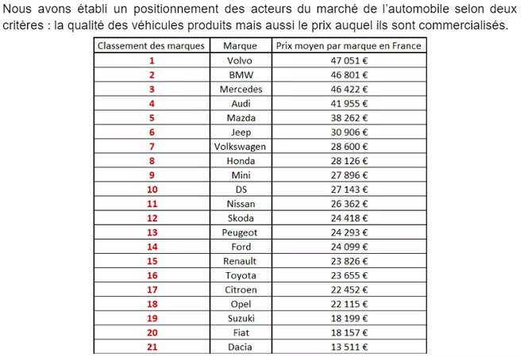
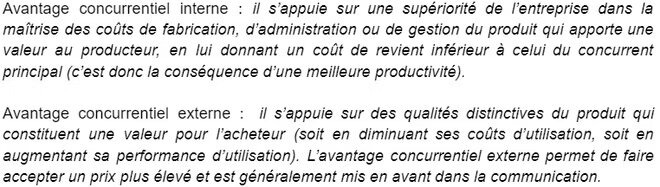

Conduire des actions Marketing
Au cours du premier semestre de ma deuxième années de BUT Techniques de Commercialisation, j'ai pu assister à des cours de marketing mix. J'ai notamment pu voir les différences spécifique entre le marketing d'étude, stratégique et opérationnel. J'ai également pu voir les différents types de marchés (principal, de substitution et complémentaire) ainsi que les DAS (domaine d'activité stratégique). J'ai ensuite pu apprendre à utiliser de nouveaux outils tels que la matrice BCG, la matrice AD Little. La matrice BCG me permet de représenter le portefeuille d’activité d'une entreprise selon la croissance du marché ciblé et la part de marché relative de l’entreprise sur une représentation graphique à deux grands axes. Ces deux grands axes sont les suivants : le taux de croissance du marché passé et futur (de faible à fort) en ordonnées et la part de marché relative de l’entreprise sur ce marché – mesurée par le rapport entre sa propre part de marché et celle du concurrent jugé le plus important (de forte à faible) en abscisses. Cet outils me permet donc de savoir si mon produit est un produit vedette, vache à lait, un dilemme un poids mort.
La matrice AD Little me permet quant à elle de déterminer le degrés de maturité de l'activité sur son marché, si celle-ci est en phase de démarrage, de croissance, de maturité ou de déclin. Elle permet également de connaitre sa position concurrentiel qu'elle occupe sur son marché. J'ai donc pu mettre en pratique les notions vu précédemment lors d'une étude de cas sur DS Automobile. Voici quelques exemple de travaux que j'ai pu réaliser lors de cette étude de cas : L'analyse de DS Automobile avec l'outil SWOT :

Le positionnement des acteurs du marché de l'automobile :

Utilisation de l'outil PESTEL sur le marché de l'automobile :
Utilisation de l'outil SWOT sur l'entreprise DS Automobile :
L'analyse des avantages concurrentiels de DS Automobile :

Le ciblage de cette même entreprise :
En dehors de cette étude de cas, j'ai également pu améliorer mes compétences en étude marketing. En effet, j'ai pu réaliser un premier questionnaire sur l'entreprise ZARA ainsi que Floralis. Voici le cahier des charges sur l'entreprise ZARA que j'ai pu rédiger ainsi que des exemples de questions présentent dans ce questionnaire :
Voici désormais le travail que j'ai pu réaliser accompagnée par une autre élève. Voici le cahier des charges sur l'entreprise Floralis, le plan de dépouillement du questionnaire qui nous a été administré ainsi que des exemples d'analyse que j'ai pu produire.
J'ai également pu me pencher sur l'étude du vintage ainsi que le made in France, des pratiques d'achat qui deviennent de plus en plus en vogue en France ces dernières années. Voici un exemple de l'analyse du Made In France et du Vintage que j'ai pu effectuer :
Etude pour en apprendre plus sur le Vintage :
En supplément des deux matrices que j'ai pu citer précédemment, j'ai également pu apprendre à utiliser l'outils Business Model Canva. Cet outil est un outil visuel qui aide à concevoir, décrire et analyser les modèles économiques d'une entreprise en se concentrant sur neuf éléments clés, tels que les segments de clients, les canaux de distribution et les sources de revenus. J'ai par exemple pu le mettre en pratique lors du début de ma première SAE Entreprenariat lors de mon analyse sur les parcs d'attractions français. Voici deux exemples d'analyse de Business Model Canva que j'ai pu réaliser sur le parc d'attraction Disneyland Paris et Super U :